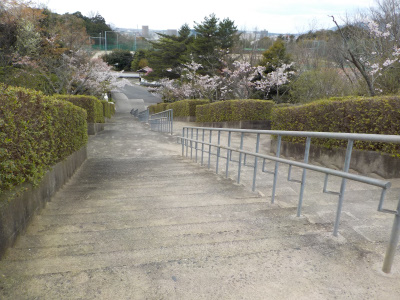
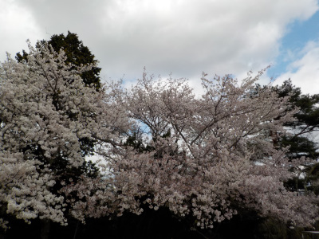
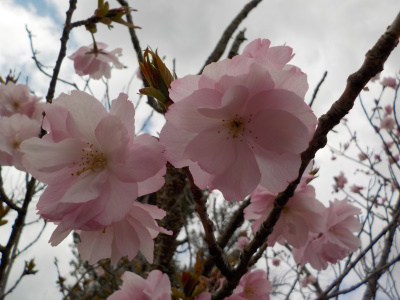
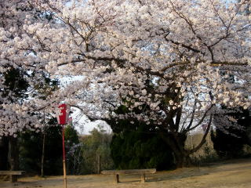
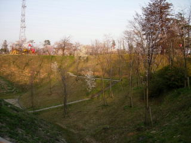
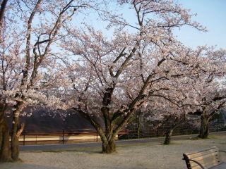

新型コロナに注意しながら花見をしました。
2020/04/05

広い駐車場がある方は人が多かったですが、階段側は人が少なかったです。

ちょっと天気が悪く暗かったですけど、のんびり桜の花見ができました。
動画です。

八重桜も咲いていました。
島根県出雲市今市町
2020/04/05

広い駐車場がある方は人が多かったですが、階段側は人が少なかったです。

ちょっと天気が悪く暗かったですけど、のんびり桜の花見ができました。
動画です。

八重桜も咲いていました。
2010/04/04
この大きな桜が一番綺麗だと思いました。

満開の桜はいいですね。丸い花の束が沢山あって見ごたえがありました。

一の谷公園は桜の本数が多いんですが、まだ小さいものも多くあります。公園も広いですので、ちょっと寂しい景色もあったりします。

公園でしっかり整備されているので駐車場もありますし、地面も綺麗で歩き易いです。
花見の宴会とかはやりやすそうな場所ですね。
小さい子が遊べる遊具があります。木が茂っているので探検ごっこができそうです。